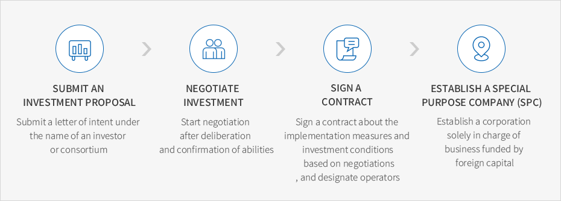

Guide for Participation in Investment Project
- Home
- Investment Guide
- Guide for Participation in Investment Project
Guide for Participation in Investment Project
Investment Principle and Scope
- 1. Foreign-invested companies are required to participate in projects through foreign direct investment (FDI)
and FDI must account for more than 10 percent of the capital invested in companies located in industrial complexes. Companies can make investment based on the agreement of corporate insiders. Companies that want to be safeguarded by the government based on the Foreign Investment Protection Act
are required to post more than 10 percent in FDI of its total equity. -
2. In principle, foreign-invested companies are required to make investment via investment in money or investment in kind including land.
They can also participate in projects through investment in capital goods or importation of foreign capital and technology based on the Foreign Investment Promotion Act.- Companies’ equity contribution must post more than 30 percent to ensure the stable management.
- Stock investors, strategic investors, institutional investors, equity tenants are allowed to make investment through consultations with Gangwon Local Government.
Scope
- 1. Investors are allowed to lease or purchase land available for sale in major development zones and are also allowed to invest in individual facilities.
- 2. If multiple companies engaging in relevant sectors or a consortium comprised of several companies want to be located in the same complex, a separate specialized industrial complex could be established in development zones.
- 3. Companies can establish a SPC in strategic partnership with a company, university or research center in Gangwon Province to be located in industrial complexes.
- 4. Companies can establish venture companies through its own investment.
Participation
-
Submitting investment proposalsMajor investors or developers can submit their investment proposals to the Gangwon Local Government (detailed R.F.P to be provided by Gangwon)
-
Submitting documents that demonstrate their willingness to investJoint development contract (consortium), letter of intent written by participating companies
-
Attaching documented evidenceAll participants including investors and operators are required to submit documents that can prove their ability to conduct projects.
- Business information memorandum, financial audit report, letter of intent or letter of comfort written by investors or financial institutions
- Documents that show their ability to ensure secure management and operation including business and risk management
Investment Procedures


- Submit an investment proposal - Submit a letter of intent under the name of an investor or consortium
- Negotiate investment - Start negotiation after deliberation and confirmation of abilities
- Sign a contract - Sign a contract about the implementation measures and investment conditions based on negotiations, and designate operators
- Establish a special purpose company (SPC) - Establish a corporation solely in charge of business funded by foreign capital